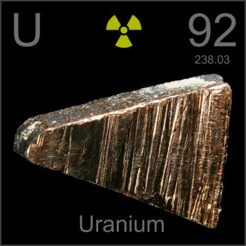

HOME
PREVIOUS
NEXT

Uranium
Atomic Weight: 238.02891
Density: 19.05 g/cm3
Melting Point: 1135 °C
Boiling Point: 3927 °C
This is a chunk of depleted uranium metal, which is used in armor-piercing ammunition and counterweights. Only 20% less radioactive than natural uranium, it creates deadly hazards when used in anger.